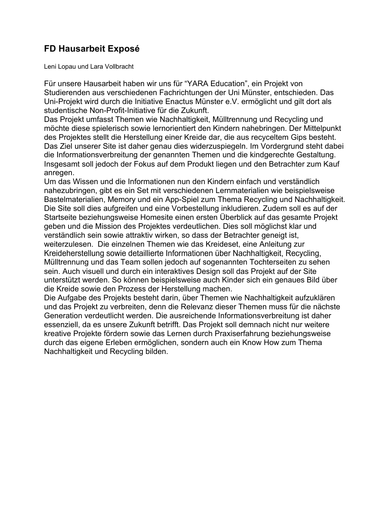
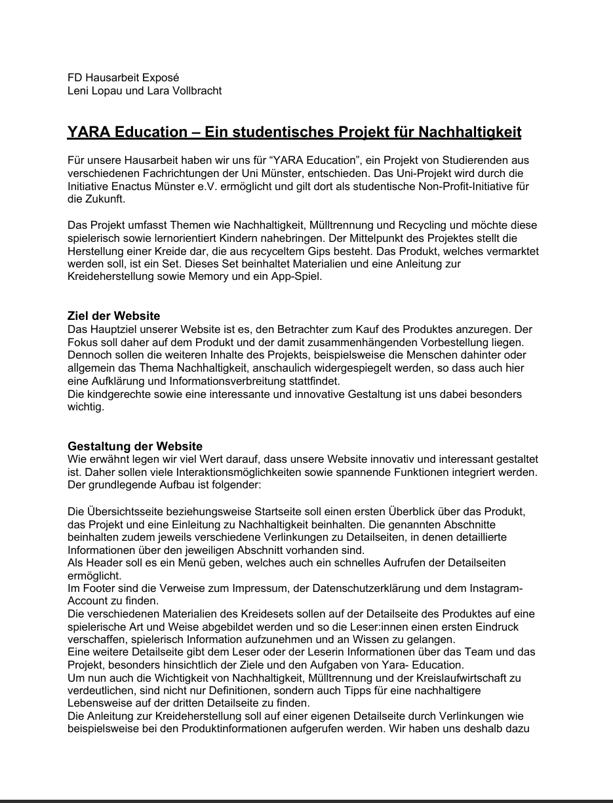
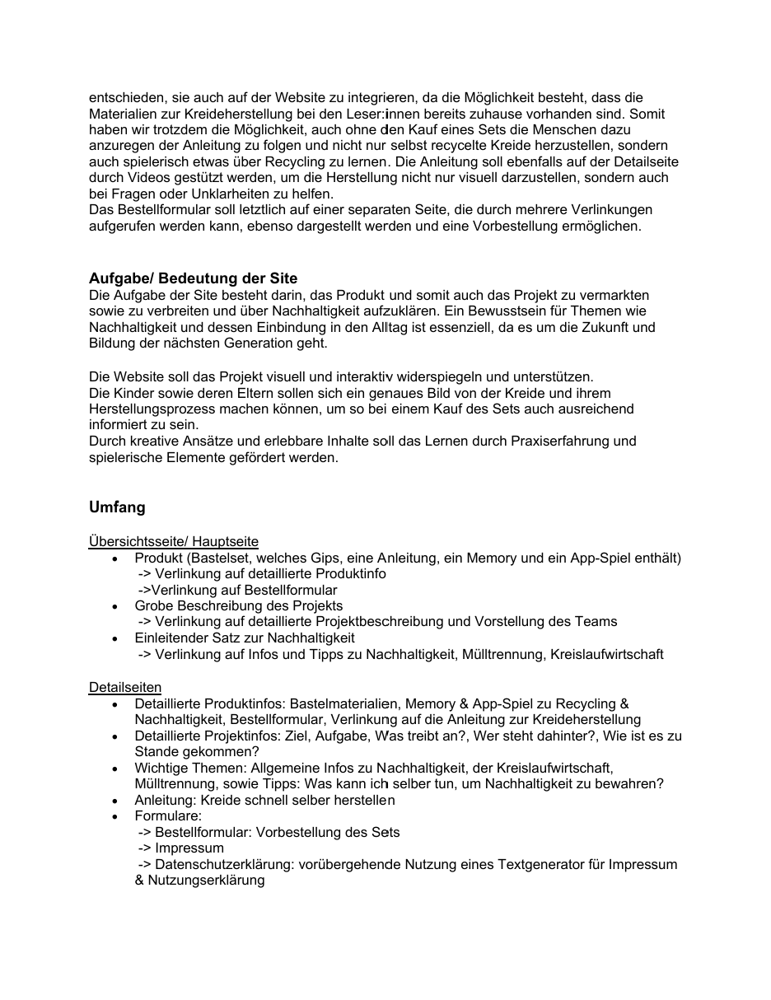
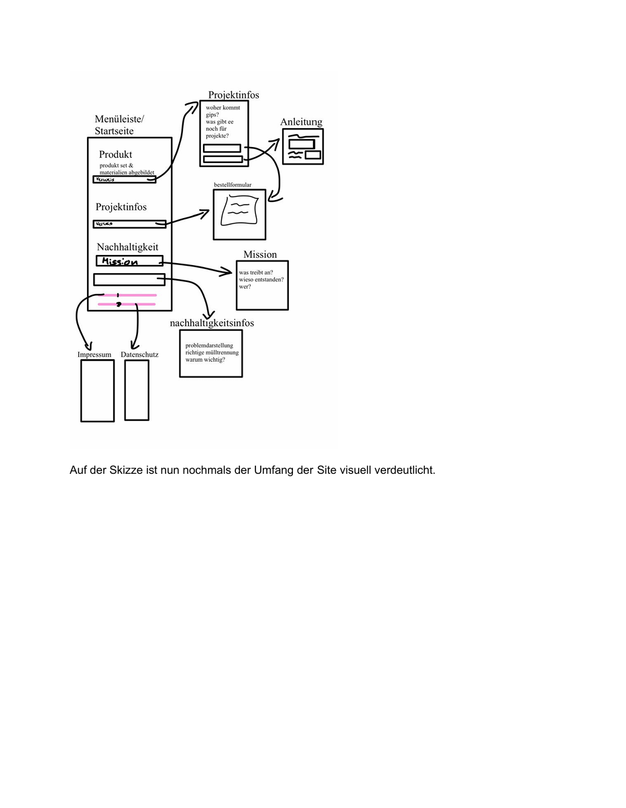

Zeitleiste
-
14.05.25 – Thema festlegen
Projektstart: Themenfindung -
16.05.25 – Infos zusammen sammeln
Recherche und erste Notizen -
19.05.24 – Erster Entwurf des Exposé

Das war nur der erste Entwurf des Exposé, den wir im späteren auch überarbeitet haben. -
28.05.25 – Ordner für Übersichten
Strukturübersicht im Frontend-Labor angelegt -
03.06.25 – Exposé überarbeitet



Überarbeitung auf Basis von Feedback -
04.06.25 – Impressum & Datenschutzerklärung generiert
Mithilfe e-recht24 Impressum & Datenschutzerklärung generiert und in die html Datei gepackt. -
08.06.25 – Inhalte zusammenschreiben
Texte für die Website vorbereitet -
10.06.25 – Erste Entwürfe der Dokumentation
Erste Rohschnitt des Arbeitsprozess dokumentiert und mit der html Datei verbunden. -
12.06.25 – HTML-Prototyp
Erste Layouts mit HTML -
13.06.25 – Finalisierung der Style-Tiles


Visuelle Gestaltungselemente ausgewählt und Style-Tiles erneut erstellt. -
15.06.25 – Umsetzung mit CSS
Styles und Layouts verfeinert -
20.06.25 – 03.07.25 Umsetzung Website
Responsive Webdesign und Ausarbeitung des Designkonzept -
02.06.25 - 06.07.25 – Dokumentation
Zusammen sammeln von nebenbei geschriebener Dokumentation zur Website und Finalisierung der Texte -
06.07.25 - Fertigstellung der Hausarbeit
{kind=link}
{kind=link}
{kind=link}
{kind=link}